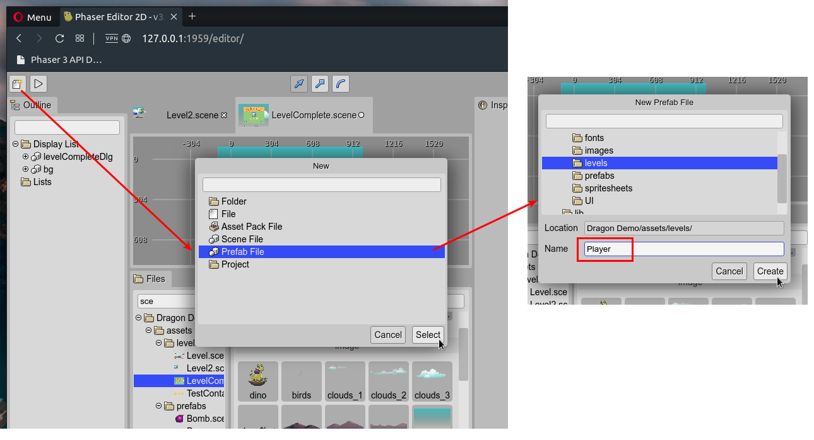
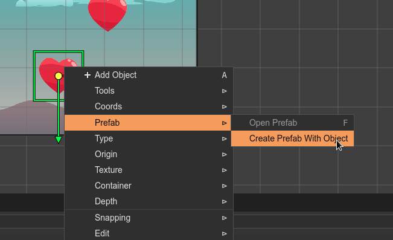
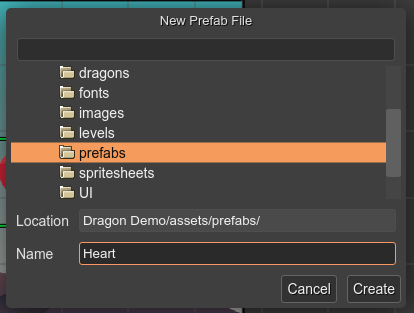

Creating a prefab file
A prefab is a scene file that you can create with the New File dialog. In the dialog, select the Prefab File option. It opens the New Prefab dialog, where you can choose the parent folder and the name for the new prefab file. That name will be used to generate the class name of the prefab, so let’s write a valid class name.
Notice that the prefab file is just a scene file. When it is created, it is empty; you should create an object that will be the prefab object.
Also, you can create a prefab directly in the Scene Editor. This operation is very handy. You can select and object and convert it to a new prefab:
Select an object in the scene.
Open the context menu and select the Prefab → Create Prefab With Object option.
It opens the New Prefab File dialog. Select the file name and the location.
The selected object is converted to an instance of the new prefab. The new prefab is listed in the Blocks view and is ready to create new instances.